Projet Cuiteur - Cahier des charges
Vous devez lire ce document en entier avant de commencer quoi que ce soit.
Vous devrez certainement lire plusieurs fois certains paragraphes pour bien les comprendre. C'est tout à fait normal. Pas parce que le document est mal écrit, pas parce que vous ne savez pas lire, mais tout simplement parce que vous devez "rentrer" dans le sujet et arriver à un certain niveau de concentration pour commencer à travailler véritablement.
Ecrire le code étant la dernière chose à faire, ne vous précipitez pas sur votre clavier. Le codage n'est qu'une activité mécanique qui s'adresse à objet mécanique (beaucoup moins intelligent que nous puisqu'il ne comprend que deux choses : 0 et 1).
Le vrai travail d'un "informaticien" commence par la réflexion. Je vous conseille donc de ne pas toucher à votre ordinateur le temps de l'étude de ce cahier des charges, mais de vous munir d'un crayon et de feuilles de papier pour y noter et dessiner les choses que la lecture vous fera venir à l'esprit. Nous vous demandons avant tout de réfléchir et de réaliser une construction intellectuelle.
Des explications complémentaires vous serons données au fur et à mesure des TP, et en réponse aux questions que vous poserez. Il faut que vous vous mettiez dans la situation qui sera la vôtre quand vous commencerez votre vie professionnelle : vous devrez reformuler ce que l'on vous demande pour être sûr d'avoir bien compris les attentes, et vous devrez demander des explications sur les éléments que vous ne comprenez pas, que ce soit des termes propres à la profession, des processus de travail ou des enchaînements de tâches.
Fonctionnalités
Cuiteur est une application de réseau social et de microblogage, du même genre que Twitter. Les utilisateurs doivent s'enregistrer pour entrer dans l'application Cuiteur : chaque utilisateur est référencé par son pseudo, qui est unique et choisi quand l'utilisateur s'inscrit Le pseudo d'inscription n'est pas modifiable.
Les utilisateurs peuvent poster des messages décrivant leur humeur. Un message est appelé "blabla". Il est volontairement court (255 caractères maxi), d'où le terme microblogage.
Tous les blablas sont publics : tout utilisateur connecté à l'application peut consulter n'importe quel blabla de n'importe quel autre utilisateur.
Chaque utilisateur peut choisir de s'abonner à d'autres utilisateurs pour visualiser automatiquement les blablas que ceux-ci postent au fur et à mesure. Les utilisateurs qui suivent un utilisateurs sont appelés "ses abonnés". Les utilisateurs suivis par un utilisateur sont appelés "ses abonnements".
Les blablas peuvent faire référence à des utilisateurs. Pour cela, il suffit de mentionner le pseudo d'un utilisateur précédé par un arobase @ (ex. @toto). Lorsqu'un blabla commence par une référence à un ou plusieurs utilisateurs, il s'agit d'un message destiné aux utilisateurs mentionnés.
Les blablas peuvent également contenir des tags qui sont des identifiants (sans espaces) commençant par le symbole dièse # (ex. #Examens). Ces tags servent à définir des tendances sur les publications dans Cuiteur et peuvent apparaître à n'importe quel endroit des blablas dont ils font partie intégrante.
Après authentification, un utilisateur accède aux fonctionnalités suivantes :
- Mettre à jour son profil : informations personnelles (nom, ville, etc.), paramètres de connexion (mot de passe, avatar, etc.)
- Interagir avec les autres utilisateurs : rechercher d'autres utilisateurs, s'abonner/se désabonner d'un utilisateur, profiter de suggestions
- Gérer ses abonnements : voir le profil de ses abonnements, voir leurs abonnés, leurs abonnements, leurs blablas.
- Consulter des blablas : les messages de son fil (qui contient tous les messages postés par les utilisateurs auxquels il est abonné, les messages qui le mentionnent et ses propres messages), les messages postés par d'autres utilisateurs, les messages mentionnant un utilisateur donné.
- Consulter des tendances : voir les messages employant certains tags, ou voir les tags les plus employés depuis un jour, une semaine, un mois ou une année.
Pages à réaliser
Nous décrivons ici la liste des pages à réaliser avec les fonctionnalités attendues pour celles-ci. Vous pouvez cliquer sur les captures d'écran pour les agrandir.
index.php
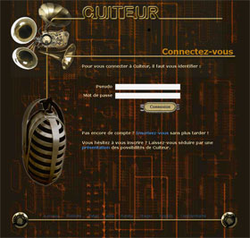
La page
index.php
est la page d'accueil de l'application Cuiteur. Elle permet à
un utilisateur déjà enregistré de
s'authentifier. Elle donne également accès aux pages
permettant de s'inscrire (lien vers
inscription.php
) ou de découvrir Cuiteur au travers d'une présentation
de l'application (lien vers
presentation.html
).
Lorsque l'authentification de l'utilisateur échoue, la page est ré-affichée, et contient un message d'erreur indiquant l'échec de l'authentification.
Lorsque l'authentification de l'utilisateur réussit, une
redirection est réalisée vers la page principale de
l'application,
cuiteur.php
.
inscription.php
La page
inscription.php
permet à un futur utilisateur de s'inscrire à
l'application Cuiteur.
L'utilisateur doit fournir les informations suivantes :
- un pseudo, qui ne doit pas déjà être utilisé par un autre utilisateur,
- un mot de passe, non-vide, qui doit être répété à l'identique pour être valide,
- son nom, qui ne doit pas être vide,
- une adresse email valide, syntaxiquement parlant.
Si la saisie ne respecte pas les indications ci-dessus, la page est ré-affichée et un message est affiché pour indiquer les erreurs.
Si la saisie est correcte, l'utilisateur est enregistré dans
la base de données et une redirection vers la page de
modification du compte de l'utilisateur est effectuée (page
compte.php
).
cuiteur.php
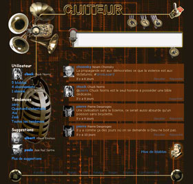
La page
cuiteur.php
est la page principale de l'application Cuiteur.
Le contenu de cette page contient les blablas visibles par l'utilisateur courant, à savoir :
- les blablas postés par l'utilisateur courant,
- les blablas postés par des utilisateurs auxquels l'utilisateur courant est abonné,
- les blablas qui mentionnent l'utilisateur courant.
Les blablas affichés sont triés du plus récent au plus ancien.
L'affichage est paginé au sens où seulement un sous-ensemble des blablas est affiché pour ne pas surcharger la page. Par défaut, les 4 derniers blablas sont affichés. Un lien "Plus de blablas" en fin de page permet de ré-afficher la page en ajoutant 4 blablas supplémentaires à ceux affichés actuellement. Ce lien existe tant que tous les blablas ne sont pas affichés sur la page.
Le formulaire en haut de la page permet de poster un message. Le
message ne doit pas être vide et sera enregistré dans la
table
blablas
de la base de données. Si le message commence par un arobase @
suivi d'un pseudo (ex : @toto) il s'agit d'un message ciblé.
Le message, une fois inséré devra être
analysé pour en extraire les utilisateurs mentionnés,
et les tags qui seront respectivement ajoutés dans la table
mentions
et dans la table
tags
.
Les blablas affichés dont l'utilisateur courant n'est pas
l'auteur possèdent des liens permettant d'y "Répondre"
ou de le "Recuiter".
La réponse aura pour effet de
recharger la page
cuiteur.php
en préparant la zone de texte avec le pseudo du destinataire
du message précédé d'un arobase (i.e. @toto). Le
"recuitage" consistera à rajouter dans la base de
données le texte message d'origine, estampillé avec la
date et l'heure du "recuit", pour lequel l'utilisateur courant sera
l'auteur, tout en gardant trace de l'auteur d'origine du message.
compte.php
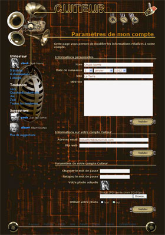
La page
compte.php
permet à un utilisateur de modifier :
- ses informations personnelles, à savoir : son nom, sa date de naissance, sa ville, et une mini-biographie,
- les informations relatives à son compte Cuiteur : son adresse email, et son site web,
- les paramètres de son compte Cuiteur : son mot de passe, son avatar, et la possibilité de désactiver ce dernier.
Chaque formulaire se valide séparément, si les conditions de validité des différents champs le composant sont satisfaites :
- Le nom de l'utilisateur ne doit pas pouvoir être vide.
- La date de naissance doit être valide, et réaliste (ni postérieure à la date du jour, ni antérieure à 130 ans).
- La ville et la mini-bio n'ont pas obligation d'être renseignées.
- L'adresse mail doit être non vide et syntaxiquement correcte.
- Le site web n'est pas obligatoire, mais s'il est renseigné il doit être syntaxiquement correct.
- Les mots de passe n'ont pas obligation d'être renseignés, mais le cas échéant, ils devront être identiques. Bien sûr si le mot de passe est laissé vide il ne faut pas mettre à jour le champ correspondant dans la base de données.
- Si une image est choisie pour remplacer l'avatar actuel, celle-ci devra faire une taille carrée de 50x50 pixels minimum. L'image sera chargée sur le serveur dans le répertoire "upload", redimensionnée au format 50x50 pixels et nommée avec l'identifiant de l'utilisateur courant (ex : "42.jpg").
En cas d'erreur au moment de la validation du formulaire, aucune modification ne sera enregistrée dans la base et un message récapitulant les erreurs sera affiché. Les données de l'utilsateur viendront alors remplacer les données issues de la base lors du ré-affichage en cas d'erreur.
Si le formulaire est valide, la base de données sera mise à jour et la page ré-affichée avec ces nouvelles informations.
recherche.php

La page
recherche.php
permet d'effectuer une recherche sur les utilisateurs.
Cette page présente une simple zone de texte permettant de saisir le critère de recherche à appliquer, qui effectuera une sélection des utilisateurs dont le pseudo, ou le nom, contient la sous-chaîne saisie.
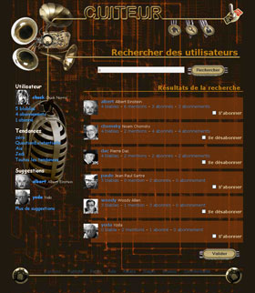
Affichage du résultat de la recherche
La zone de texte devra contenir le critère de recherche
utilisé. On aura ensuiite la liste des utilisateurs
sélectionnés, avec pour chacun, leur nombre de blablas,
de mentions, d'abonnés et d'abonnements. Chacune de ces quatre
informations sera affichée sous la forme d'un lien pointant
respectivement vers la page
blablas.php
,
mentions.php
,
abonnes.php
et
abonnements.php
.
Si l'utilisateur courant n'est pas encore abonné
à l'utilisateur affiché, une case à cocher
permettra l'abonnement.
Si l'utilisateur courant est
déjà abonné à l'utilisateur
affiché, une case à cocher permettra le
désabonnement.
Le bouton "Valider" en bas de la
liste de résultats permettra de traiter les cases qui ont
été cochées en réalisant les
abonnements/désabonnements aux utilisateurs. Après le
traitement la page
cuiteur.php
est affichée.
utilisateur.php
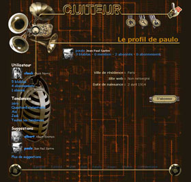
La page
utilisateur.php
permet de consulter les informations relatives à un
utilisateur.
Le haut de la page présente un résumé de
l'utilisateur, en donnant son pseudo, suivi de son vrai nom, en
dessous desquels se trouvent récapitulés le nombre de
blablas, de mentions, d'abonnés et d'abonnements, sous la
forme 4 liens pointant respectivement vers les pages
blablas.php
,
mentions.php
,
abonnes.php
et
abonnements.php
.
Les informations affichées sont la ville de résidence, le site web, et la date de naissance de l'utilisateur dont on affiche les renseignements. Si un des champs n'a pas été renseigné alors l'indication Non renseigné sera affichée.
Un bouton permet également de s'abonner ou de se
désabonner de l'utilisateur affiché. Le traitement de
ce bouton entraînera l'affichage de la page
cuiteur.php
.
blablas.php
La page
blablas.php
permet d'afficher les blablas d'un utilisateur.
Le haut de la page présente un résumé de
l'utilisateur, en donnant son pseudo, suivi de son vrai nom, en
dessous desquels se trouvent récapitulés le nombre de
blablas, de mentions, d'abonnés et d'abonnements, sous la
forme 4 liens pointant respectivement vers les pages
blablas.php
,
mentions.php
,
abonnes.php
et
abonnements.php
.
Les blablas affichés sont ceux dont l'utilisateur consulté est l'auteur, recuits inclus, à l'exception des blablas ciblés.
Les blablas affichés possèdent les mêmes
caractéristiques et les même fonctionnalités que
les blablas de la page
cuiteur.php
.
abonnements.php
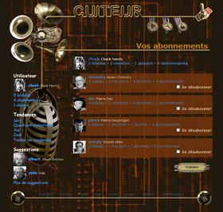
La page
abonnements.php
présente tous les utilisateurs auxquels est abonné un
utilisateur.
Le haut de la page présente un résumé de
l'utilisateur, en donnant son pseudo, suivi de son vrai nom, en
dessous desquels se trouvent récapitulés le nombre de
blablas, de mentions, d'abonnés et d'abonnements, sous la
forme 4 liens pointant respectivement vers les pages
blablas.php
,
mentions.php
,
abonnes.php
et
abonnements.php
.
Cette page présente une liste d'utilisateurs avec, pour
chacun, leur nombre de blablas, de mentions, d'abonnés et
d'abonnements. Chacune de ces quatre informations sera
affichée sous la forme d'un lien pointant respectivement vers
la page
blablas.php
,
mentions.php
,
abonnes.php
et
abonnements.php
.
Si l'utilisateur courant n'est pas encore abonné à
l'utilisateur affiché, une case à cocher permettra
l'abonnement.
Si l'utilisateur courant est
déjà abonné à l'utilisateur
affiché, une case à cocher permettra le
désabonnement.
Le bouton "Valider" en bas de la
liste de résultats permettra de traiter les cases qui ont
été cochées en réalisant les
abonnements/désabonnements aux utilisateurs. Après le
traitement la page
cuiteur.php
est affichée.
abonnes.php
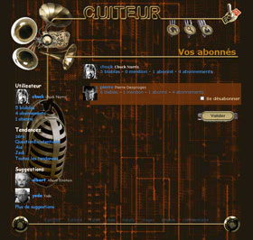
La page
abonnes.php
présente tous les utilisateurs qui sont abonnés
à l'utilisateur visualisé.
Le haut de la page présente un résumé de
l'utilisateur, en donnant son pseudo, suivi de son vrai nom, en
dessous desquels se trouvent récapitulés le nombre de
blablas, de mentions, d'abonnés et d'abonnements, sous la
forme 4 liens pointant respectivement vers les pages
blablas.php
,
mentions.php
,
abonnes.php
et
abonnements.php
.
Cette page présente une liste d'utilisateurs avec, pour
chacun, leur nombre de blablas, de mentions, d'abonnés et
d'abonnements. Chacune de ces quatre informations sera
affichée sous la forme d'un lien pointant respectivement vers
la page
blablas.php
,
mentions.php
,
abonnes.php
et
abonnements.php
.
Si l'utilisateur courant n'est pas encore abonné à
l'utilisateur affiché, une case à cocher permettra
l'abonnement.
Si l'utilisateur courant est
déjà abonné à l'utilisateur
affiché, une case à cocher permettra le
désabonnement.
Le bouton "Valider" en bas de la
liste de résultats permettra de traiter les cases qui ont
été cochées en réalisant les
abonnements/désabonnements aux utilisateurs. Après le
traitement la page
cuiteur.php
est affichée.
mentions.php
La page
mentions.php
permet d'afficher les blablas qui mentionnent un utilisateur.
Le haut de la page présente un résumé de
l'utilisateur, en donnant son pseudo, suivi de son vrai nom, en
dessous desquels se trouvent récapitulés le nombre de
blablas, de mentions, d'abonnés et d'abonnements, sous la
forme 4 liens pointant respectivement vers les pages
blablas.php
,
mentions.php
,
abonnes.php
et
abonnements.php
.
Les blablas affichés sont ceux qui sont associés dans
la table
mentions
à l'utilisateur affiché.
Les blablas affichés possèdent les mêmes
caractéristiques et les même fonctionnalités que
les blablas de la page
cuiteur.php
.
suggestions.php
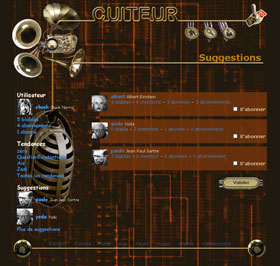
La page
suggestions.php
présente des suggestions d'utilisateurs auxquels l'utilisateur
courant n'est pas (encore) abonné.
On choisira les utilisateurs suggérés comme étant les utilisateurs auxquels sont abonnés les utilisateurs auxquels est abonné l'utilisateur courant. Pour introduire un peu de diversité, on n'affichera que 5 utilisateurs suggérés maximum, choisis aléatoirement parmi toutes les suggestions possibles.
Cette page présente une liste d'utilisateurs avec, pour
chacun, leur nombre de blablas, de mentions, d'abonnés et
d'abonnements. Chacune de ces quatre informations sera
affichée sous la forme d'un lien pointant respectivement vers
la page
blablas.php
,
mentions.php
,
abonnes.php
et
abonnements.php
.
Si l'utilisateur courant n'est pas encore abonné à
l'utilisateur affiché, une case à cocher permettra
l'abonnement.
Si l'utilisateur courant est
déjà abonné à l'utilisateur
affiché, une case à cocher permettra le
désabonnement.
Le bouton "Valider" en bas de la
liste de résultats permettra de traiter les cases qui ont
été cochées en réalisant les
abonnements/désabonnements aux utilisateurs. Après le
traitement la page
cuiteur.php
est affichée.
tendances.php
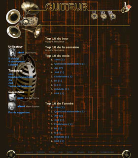
La page
tendances.php
a deux utilités.
Elle peut soit servir à afficher des tendances globales, en
affichant un top 10 du jour, de la semaine, du mois ou de
l'année des tags les plus utilisés (cf. capture
d'écran à gauche). Chaque tag affiché sera un
lien qui renverra sur cette même page (
tendances.php
).
Cette page peut aussi servir à afficher une tendance en particulier, en considérant un tag précis. Dans ce cas, une liste de blablas contenant ce tag seront affichés sur le même principe que les listes de blablas des pages précédemment décrites (cf. capture d'écran à droite).
Vous devez nommer les pages tels qu'elles ont été nommées dans cet énoncé. La page index.php doit se trouver à la racine du répertoire du site. Toutes les autres pages php doivent se trouver dans le répertoire php.
Modèle et liens
Modèle général
Toutes les pages (sauf index.php et inscription.php) sont construites sur le modèle ci dessous.
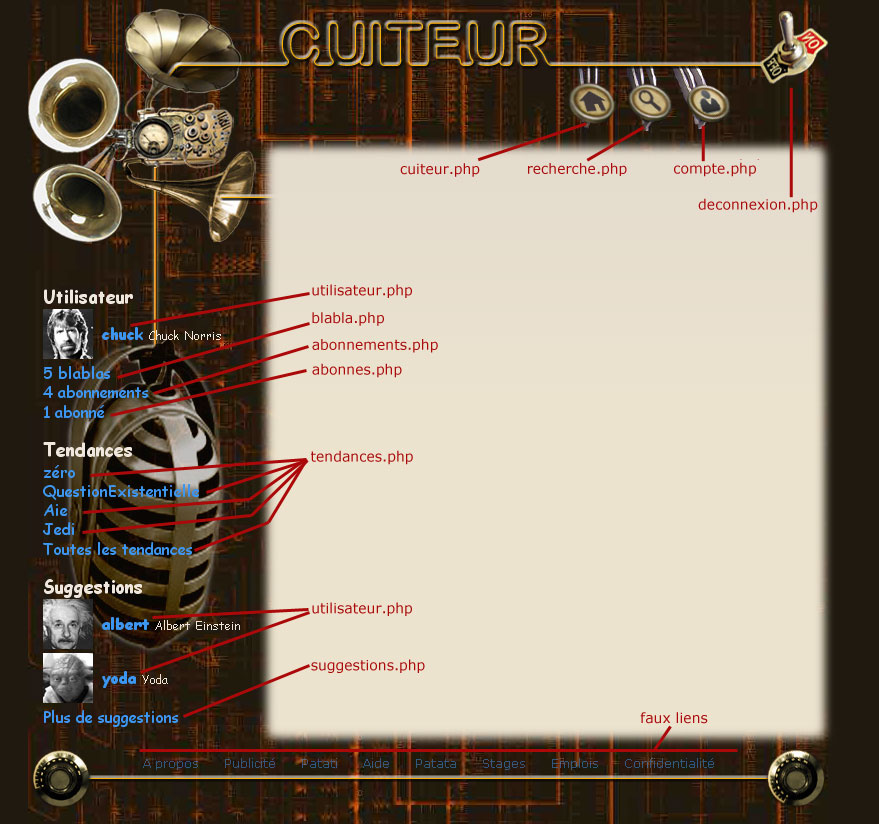
Le bandeau supérieur contient 4 liens sur les pages indiquées.
Le bloc de gauche affiche les éléments
mentionnés qui pointent sur les pages indiquées.
Dans le cas ou l'utilisateur n'a pas de blablas ou d'abonnements ou
d'abonnés, if faut l'indiquer (ie 0 blabla, 0 abonnement,
etc).
La liste des tendances est composées par
défaut des 4 tendances pour lesquelles il y a le plus de
blablas. Ce nombre de 4 est un paramètre de l'application qui
doit pouvoir être modifié facilement.
La liste
des suggestions est composées par défaut de 2
propositions. Ce nombre de 2 est un paramètre de l'application
qui doit pouvoir être modifié facilement.
Modèle infos utilisateur
Certaines pages présentent des informations réduites sur un utilisateur. Le modèle est toujours le même et les les liens sont décrits ci dessous :
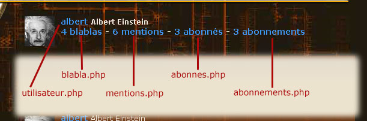
Ces informations peuvent apparaître soit en haut de page (blabla.php, mentions.php, abonnes.php, abonnement.php, utilisateur.php) , soit sous la forme d'une liste d'utilisateurs (recherche.php, suggestions.php, abonnes.php, abonnements.php).
Modèle blabla
Les blablas sont présentés sous la forme d'une liste. Un blabla peut contenir divers liens, comme définis ci-dessous.
Blabla simple d'un utilisateur lambda (ie pas l'utilisateur connecté)
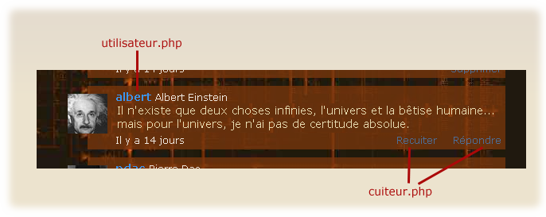
L'utilisateur connecté peut voir la fiche détaillée de l'auteur du blabla, y répondre ou le recuiter.
Blabla simple de l'utilisateur connecté
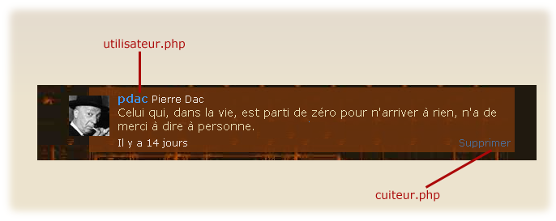
L'utilisateur connecté peut voir sa fiche détaillée et supprimer ses blablas.
Blabla complexe
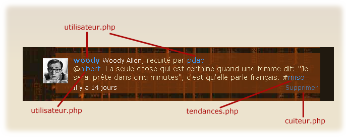
Le blabla a été recuité, comme indiqué
après le nom de l'auteur.
Le blabla contient une
référence à un autre utilisateur (@albert). La
référence à cet autre utilisateur est
située en début de blabla et indique en
conséquence que ce blabla est une réponse à un
autre. La référence à un autre utilisateur peut
aussi être située n'importe où dans le texte du
blabla et il peut y avoir plusieurs utilisateurs
référencés.
Le blabla contient un tag
(#miso). Le tag peut être situé n'importe où dans
le texte du blabla et il peut y avoir plusieurs tags.
Réflexion, schématisation, factorisation, et seulement APRES action.
Il est extrêmement important que vous preniez le temps de
réfléchir à ce qui est demandé, de
façon à vous faire une idée claire,
précise et détaillée des traitements qui sont
à développer. En réalité l'application
repose sur très peu de fonctionnalités (donc fonctions)
qu'il suffit ensuite de réutiliser dans divers environnements,
en changeant juste les "paramètres" d'entrées
(en poussant les choses à l'extrême il serait possible
de réaliser le développement avec seulement 2 pages).
Il faut absolument que vous définissiez les traitements qui
sont identiques dans les différentes pages de façon
à les factoriser, les développer sous forme de
fonctions et les mettre dans une bibliothèque. Vous pouvez
faire une ou plusieurs bibliothèques (à mon avis 2
serait un bon nombre).
La note finale tiendra beaucoup
compte de la façon dont vous avez segmenté et
arrangé votre code pour qu'il soit le plus modulaire et
modulable possible, et modifiable facilement et rapidement. Nous ne
jugeons pas la rapidité d'exécution du travail
demandé, mais la qualité de la réalisation. Lors
de la soutenance nous vous demanderons les schémas que vous
avez réalisés avant de commencer à faire votre
développement (leur absence serait rédhibitoire). Nous
vous demanderons aussi si vous avez pu les suivre, pourquoi, et
quelle expérience vous tirez de ces conclusions.
Vous devRez décrire les fonctions que vous faites en utilisant la syntaxe PHPDoc telle que vue en cours. Chaque fonction non documentée correctement entraînera automatiquement une baisse de 2 points dans la note finale.
D'une façon plus générale, vous devRez commenter votre code correctement. Vous devRez aussi veiller à sa présentation pour qu'il soit claire, indenté, facile à lire sans que l'on ait à déchiffer les instructions caractère par caractère. Toute présence de code mort sera sanctionnée.
Base de données
Schéma relationnel
La base de données de Cuiteur contient 5 tables permettant de gérer : les utilisateurs, les relations entre utilisateurs, les blablas, les tags contenus dans les blablas, et les mentions faites à des utilisateurs dans les blablas. 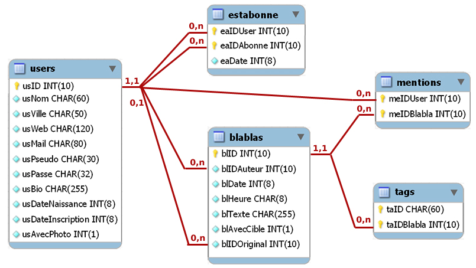
La base de données est installée sur le serveur localhost. Elle s'appelle votrenom_cuiteur (ou 'votrenom" est votre nom de famille en minuscule, sans accent, et avec uniquement la première partie du nom pour les noms composé). L'utilisateur de la base avec des droits réduits pour le Web s'appelle votrenom_u, avec le mot de passe votrenom_p. Par exemple l'étudiant Nicolas Lepetit travaillera avec la base de données lepetit_cuiteur avec l'utilisateur lepetit_u, mot de passe leptit_p.
Si vous souhaitez travailler sur votre ordinateur personnel, vous pouvez utiliser ce script SQL (cuiteur_init_bd.zip) pour installer la base de données, via phpMyAdmin par exemple. Le script va créer la base de données cuiteur et l'utilisateur cuiteur_user avec le mot de passe cuiteur_pass. La base de données est remplie avec un jeu d'essai.
Description des tables
| La table users collectent toutes les informations sur les utilisateurs, qu'il s'agisse des paramètres de connexion (email, mot de passe) ou d'informations personnelles consultables par d'autres utilisateurs. | ||
| Champ | Type | Description |
|---|---|---|
| usID | int(10) | Clé primaire, numéro automatique, identifiant de l'utilisateur |
| usNom | char(60) | Nom de l'utilisateur |
| usVille | char(50) | Ville de l'utilisateur (lieu de résidence actuel) |
| usWeb | char(120) | Site web de l'utilisateur (au format http://...) |
| usMail | char(80) | Adresse email de l'utilisateur |
| usPseudo | char(30) | Clé candidate, pseudonyme de l'utilisateur. De 4 à 30 caractères alphanumériques, sans espaces ni ponctuation. |
| usPasse | char(32) | Mot de passe de l'utilisateur. Ce qui est enregistré est la signature md5 du mot de passe et non le mot de passe. |
| usBio | char(255) | Mini-biographie de l'utilisateur |
| usDateNaissance | int(8) | Date de naissance de l'utilisateur, nombre à 8 chiffres au format AAAAMMJJ où AAAA est l'année, MM est le mois (sur 2 chiffres), et JJ est le jour (sur 2 chiffres) |
| usDateInscription | int(8) | Date d'inscription de l'utilisateur, nombre à 8 chiffres sur le même format que le date de naissance |
| usAvecPhoto | int(1) | Indique si l'utilisateur utilise un avatar personnalisé (valeur 1) ou s'il utilise un avatar anonyme (valeur 0) |
| usAvecPhoto | int(1) | Indique si l'utilisateur utilise un avatar personnalisé (valeur 1) ou s'il utilise un avatar anonyme (valeur 0) |
| La table estAbonne enregistre les abonnements entre un utilisateur et les utilisateurs auxquels il est abonné. | ||
| Champ | Type | Description |
| eaIDAbonne | int(10) | Clé primaire (avec eaIDUser), identifiant de l'utilisateur auquel eaIDUser est abonné (pointe sur "usID" de la table "users") |
| eaIDUser | int(10) | Clé primaire (avec eaIDAbonne), identifiant de l'utilisateur (pointe sur "usID" de la table "users") |
| eaDate | int(8) | Date d'abonnement, nombre à 8 chiffres au format AAAAMMJJ où AAAA est l'année, MM est le mois (sur 2 chiffres), et JJ est le jour (sur 2 chiffres) |
| La table blablas enregistre les blablas des utilisateurs. Le blabla peut être également un "recuit": un blabla publié par un autre utilisateur et retransmis par l'utilisateur en cours. | ||
| Champ | Type | Description |
| blID | int(10) | Clé primaire, numéro automatique, identifiant du blabla |
| blIDAuteur | int(10) | Identifiant de l'auteur du message (pointe sur "usID" de la table "users") |
| blDate | int(8) | Date de publication du message, nombre à 8 chiffres au format AAAAMMJJ où AAAA est l'année, MM est le mois (sur 2 chiffres), et JJ est le jour (sur 2 chiffres) |
| blHeure | char(8) | Heure de publication du message, format HH:MM:SS où HH est l'heure (2 chiffres), MM les minutes (2 chiffres) et SS les secondes (2 chiffres) |
| blTexte | char(255) | Texte complet du blabla (avec éventuellement les références aux autres utilisateurs et tags) |
| blAvecCible | int(1) | Indique si le blabla est pour tout le monde (valeur 0) ou s'il a un ou plusieurs destinataires particuliers (ie une réponse) (valeur 1) |
| blIDOriginal | int(10) | Identifiant de l'auteur original d'un blabla recuité. Si 0, le blabla n'est pas un blabla recuité. |
| La table mentions enregistre les mentions faites d'un utilisateur dans les blablas. | ||
| Champ | Type | Description |
| meIDBlabla | int(10) | Clé primaire (avec meIDUser), identifiant du message mentionnant un utilisateur (pointe sur "blID" de la table "blablas") |
| meIDUser | int(10) | Clé primaire (avec meIDBlabla), identifiant de l'utilisateur mentionné dans le message (pointe sur "usID" de la table "users") |
| La table tags enregistre les tags apparaissant dans les blablas. | ||
| Champ | Type | Description |
| taID | char(60) | Clé primaire (avec taIDBlabla), le tag en lui-même, sans le # devant |
| taIDBlabla | int(10) | Clé primaire (avec taID), identifiant du message contenant le tag (pointe sur "blID" de la table "blablas") |
La qualitE des requEtes SQL sera bien entendu prise en compte dans la notation du projet.
Organisation des développements sur le serveur
Vous organiserez vos développements dans une arborescente de répertoires sur le serveur, dans votre espace personnel :
votre_nom |_____ html |_____images | |_____anonyme.jpg | |_____photos | |_____styles |_____php |_____upload (contient les avatars des utilisateurs) | |_____1.jpg | |_____2.jpg | |_____3.jpg | |_____... | |_____index.php
L'avatar d'un utilisateur est situé dans le répertoire
"upload". Le fichier image de l'avatar est nommé XXX.jpg
où XXX désigne l'identifiant de l'utilisateur (ie
usID). Cette image a une dimension de 50px / 50px.
Si
l'utilisateur ne veut pas utiliser d'avatar personnel, un avatar
"anonyme" est disponible dans le répertoire "images"
(anonyme.jpg) et doit être utilisé à la place de
l'avatar personnel.
Si vous souhaitez travailler sur votre ordinateur personnel, vous devez utiliser cette archive (cuiteur_reperts.zip - disponible quand le projet commencera) qui fournit l'arborescence des répertoires avec les éléments nécessaires pour débuter (images, corrigés des TP1 et 2, etc.).
Vous devez utiliser l'arborescence de répertoires telle que définie ci dessus. Vous devez nommer les répertoires et les pages tels qu'ils ont été nommés dans cet énoncé. Vous devez utiliser la base de données avec les tables et les champs nommés de la même façon que ceux définis dans cet énoncé. Tout manquement à ces règles sera sanctionné par le refus de votre travail.
Lors de la soutenance de votre projet et pour sa notation, votre travail sera installé sur notre serveur, et utilisera la base de données "par défaut" fournie précédemment (cuiteur_init_bd.zip). Veillez donc à développer sans que l'on ait besoin d'extensions ou de paramètrages particuliers des serveurs.